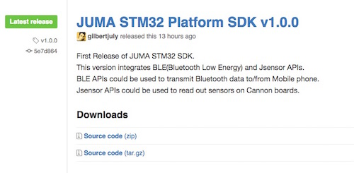
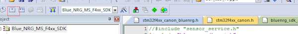
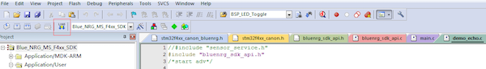
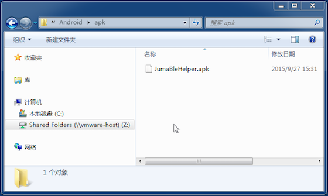
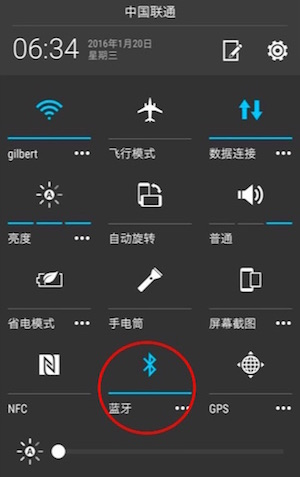

Cannon例程: 蓝牙LED
概述¶
本例展示手机APP如何通过蓝牙遥控点亮Cannon开发板上的LED。通过本例您可以学习SDK中BLE APIs和调度APIs的用法。
获取嵌入式SDK及例程¶
下载最新的嵌入式SDK(发布版)：
https://github.com/JUMA-IO/STM32_Platform/releases
如JUMA STM32 Platform SDK v1.0.0：

如果您想获知最新的代码改动情况，请使用github的“watch”功能。
编译和烧写嵌入式软件¶
Step1. 打开样本工程：¶
x:/Cannon/product/application/remote_control/mdk-arm/CAF.uvproj

Step2. 编译工程¶

Step3. 烧写软件¶

安装“BLE调试助手”APP¶
不像先前的SensorTag，我们没有为遥控点灯专门制作一个APP，不过您可以通过“BLE调试助手”来实现遥控点灯。就像它的命名一样，“BLE调试助手”是一个调试APP，可以发送或接收手机和设备之间的原始蓝牙数据。本例中，我们使用“BLE调试助手”给Cannon发送一个数据，Cannon接收到该数据后，就点亮LED。
1.应用市场安装¶
您可以从AppStore和应用宝，下载和安装“JUMA BLE调试助手”:
- iOS版本: BLE调试助手_AppStore
- Android版本: BLE调试助手_应用宝
2.Android APK安装¶
如果使用Android手机，在SDK集成包里含有“JUMA BLE调试助手”，可以直接安装：

如果您不知道如果将APK安装至手机，请参阅这篇文章。
3.自行编译源码安装¶
- iOS版本: BLE调试助手_iOS_Github
- Android版本: BLE调试助手_Android_Github
和手机APP通信¶
Step1. 打开手机的蓝牙功能¶

Step2. 运行“BLE调试助手”APP¶
打开后的界面如下：

Step3. 扫描和连接设备¶
点击Scan进行设备扫描，之后会看到如下的扫描结果：

选择“BlueNRG_LED”或者“Cannon”起始的设备名，再点击Start/Connect按钮进行连接。
Step4. APP发送数据遥控点灯¶
之后APP可以发送数据给Cannon，Cannon接受到特定的数据后，会点亮LED。具体做法为：
- 长按按钮“1”，在编辑框中输入“01”(十六进制的数值)表示点灯。
- 长按按钮“2”，在编辑框中输入“00”(十六进制的数值)表示熄灭。
然后点击按钮1或者按钮2，APP就会给Cannon发0x01和0x02了。
注意，调试助手会封装数据，比如：
点亮LED时数据内容为：0x01，实际发送0x010101；
熄灭时数据位内容为：0x00，实际发送0x010100。
其中数据格式为：第1个字节为数据类型，第2个字节为数据长度，第三个字节为数据内容。
阅读代码¶
本例中的嵌入式代码位于：
x:/Cannon/product/application/remote_control/app.c
代码量很少，已配有注释，非常方便阅读。
如果您对其中的BLE APIs和调度APIs有所疑问，请查阅相应的API说明：
http://www.juma.io/doc/zh/embedded_api/guide/